「できた！」から、
子どもは変わる。
日本で唯一、先生全員が正社員の個別指導塾。
2001年から、成田で
3,000人を送り出してきました。
日本で唯一、先生全員が正社員の個別指導塾。
2001年から、成田で
3,000人を送り出してきました。
まずは、無料体験授業から。
受けてみてから、じっくりお決めください。
※お電話（050-1720-0512）は24時間受付。ご不在時は録音いただければ折り返しご連絡いたします。
「宿題やりなさい」と言わなくても、自分から机に向かってくれたら。毎日声をかけるのは、正直しんどい。
答えだけ写して終わりではなく、どんな質問をしてもその場で分かりやすく答えてくれる先生がいてほしい。
毎年のように担当が変わると、また一から関係を作り直すことに。子どものことを分かってくれる人に、ずっと見ていてほしい。
そのすべてに答えるために、
Canはひとつの選択をしました。

塾長は子どもの頃、母親から毎日、ささいなことで何時間もひどく怒られました。そのたびに、こう思っていたそうです。
そんなとき、小学6年生の担任の先生が、たった一言をかけてくれました。
努力すれば、
人間は変われる。
その言葉を信じて努力を重ね、塾長は自信を持てるようになっていきました。そして、決めたのです。
そうして2001年、個別教育Canは生まれました。
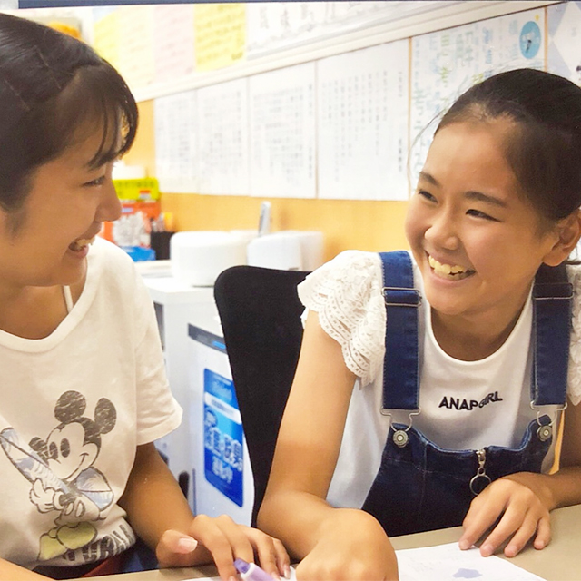
「自分はダメだ」と思っている子を、
一人でも多く救いたい。
それが、Canのすべての始まりです。
日本には、個別指導塾が
35,000教室あります。
その中で、
先生が全員正社員なのは
個別教育Canだけです。
大学生の授業は、一切ありません。

学生アルバイトはいません。全員がお子様の未来に責任を持つ正社員だからこそ、ずっと変わらない責任と安心感で寄り添い続けます。

体系的な研修を積んでいるため、お子様のありのままを優しく受け止められます。日々の小さな不安にも、毎日変わらない笑顔で励まし続けます。
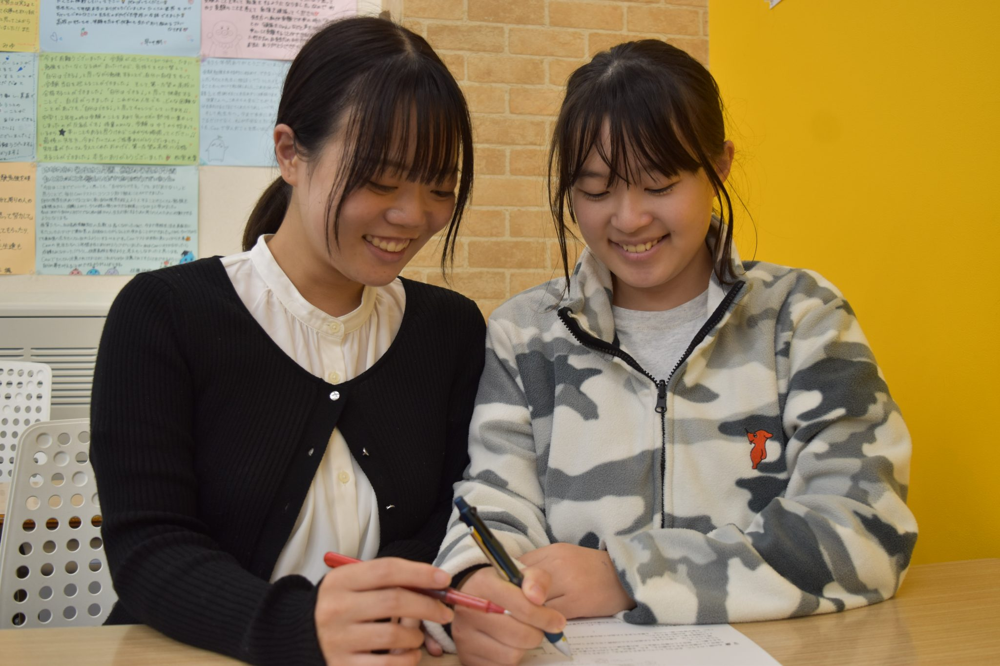
「できた！」の笑顔を引き出し、一生の宝物となる自信を手渡します。感謝や素直さを育み、周りから愛される大人へと導きます。
教科研修に加えて、来談者中心療法（カール・ロジャース）、論理療法（アルバート・エリス）、自己超越性の心理学（アブラハム・マズロー）、ロゴセラピー（ビクトール・フランクル）、アサーショントレーニング。社外研修では論語や朱子学など人間性の学びも重ねています。どの子にも向き合えるように、教える力と人間性の両方を磨き続けています。
子どもたちは、先生をあだ名で呼びます。

だいすたー
どんな気持ちも受け容れ、いつでも励ましてくれる
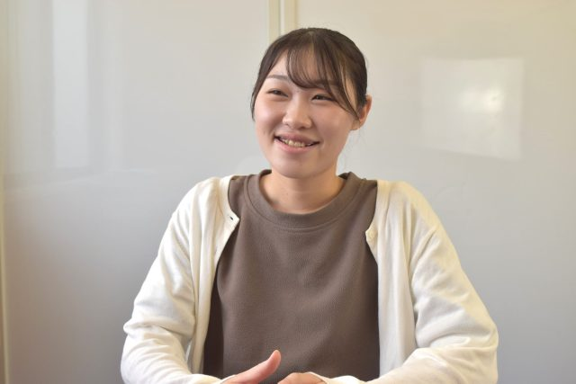
いとちゃん
楽しくて面倒見の良い

かおるん
素直で思いやりがある
ぼりー
とことん関わって、気づかせてくれる

まーちゃん
いつも笑顔で前向きに関わってくれる

みなちゃん
「自分ならできる！」と自信を持たせる
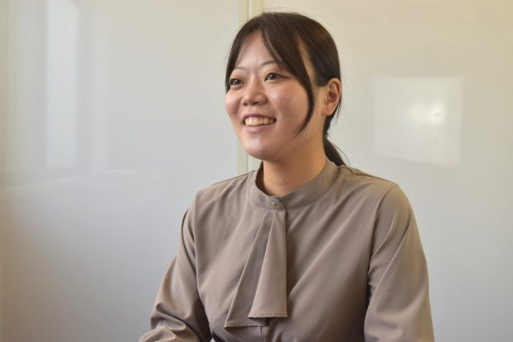
さやねえ
優しく頼りになる
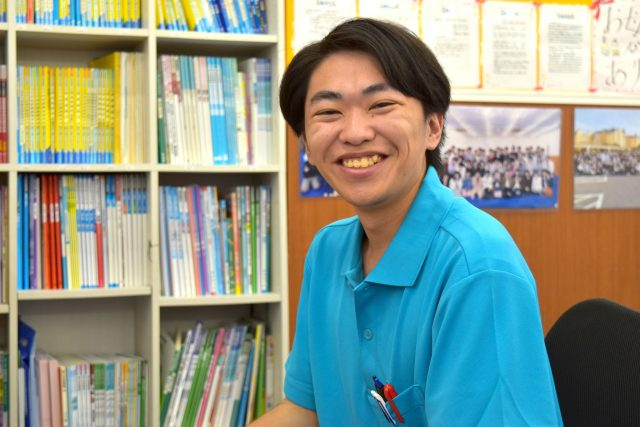
にちさん
なんでもわかるまで教えてくれる

マスター
とことん励まして希望を引き出してくれる
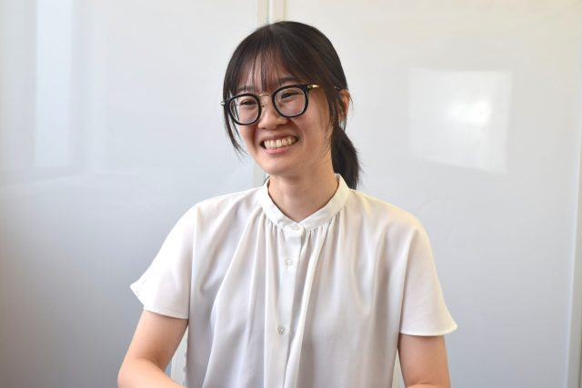
ゆなちゃん
いつも笑顔で子どもを笑顔にする

アンディ
数学の授業が楽しくてわかりやすい
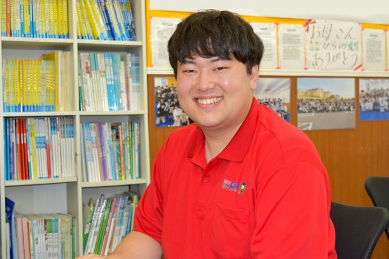
わに
授業がいつでも楽しくわかりやすい
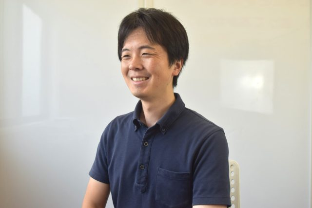
くーさん
本気で関わり、心の支えになってくれる

まっくす
熱く子ども思いな

トーマス
面倒見のいい信頼できる
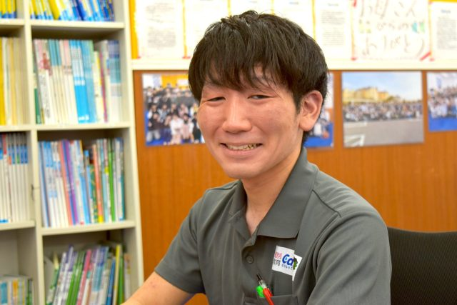
のすけ
面倒見が良くて、子どものやる気を引き出してくれる
リーダー
どんな時でも助けてくれて頼りになる

かいくん
子どもに寄り添い、子どもの主体性を引き出してくれる
ごうちゃん
いつも元気でどんな時も元気をもらえる

ふみさん
どんなときも子どもファーストで支え続けてくれる

えじそん
子どもの心を動かし、支え、子どもが変わる

よしさん
努力を感謝しながら出来る子どもに

ザッキー
子どもにとことん関わって自信を持たせてくれる

ゆうてぃん
子どもの安心できる居場所になる
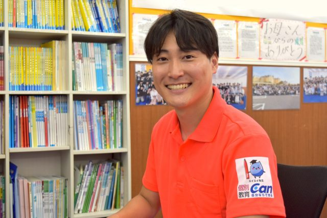
ひろまてぃー
優しくて思いやりがあり、学力も人間力も育ててくれる

よっしー
凄く熱心に関わってくれる
教育を通じて、
子どもの可能性を開花させるために。
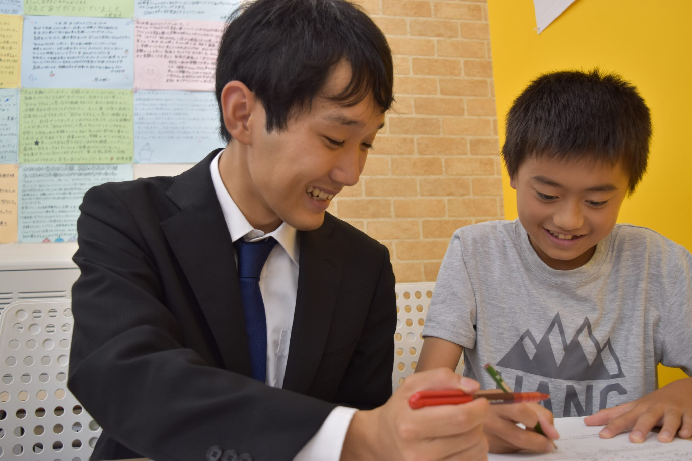
とことん関わり、とことん愛情をかけ、とことん教えます。困っている子どもを放っておくことはありません。「そこまでしてくれるのか」という、家族のような面倒見の良さです。

子どもの性格・やる気・理解度・自信・志望校に合わせて、教え方を変えられます。教科研修に加えて各種心理療法まで研修するために、先生全員を正社員にしています。
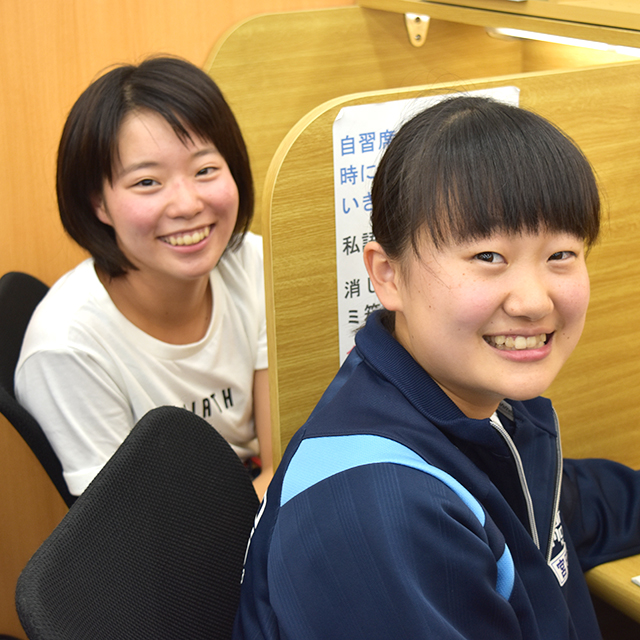
困難なことにも「自分ならできる！」と努力し、挑戦する子に育てます。努力の大切さや、なぜ勉強するのかを、授業の中と外の関わりを通じて伝えていきます。
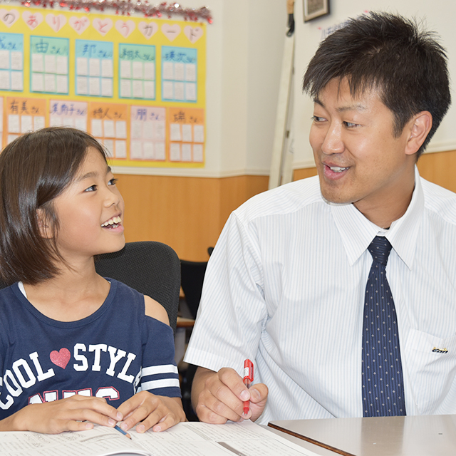
ほめる・励ます・ハイテンションで集中力の高い授業。その子のレベルに合った問題で自信を持たせ、子どもを少しも放っておきません。笑顔で楽しく学べる授業です。
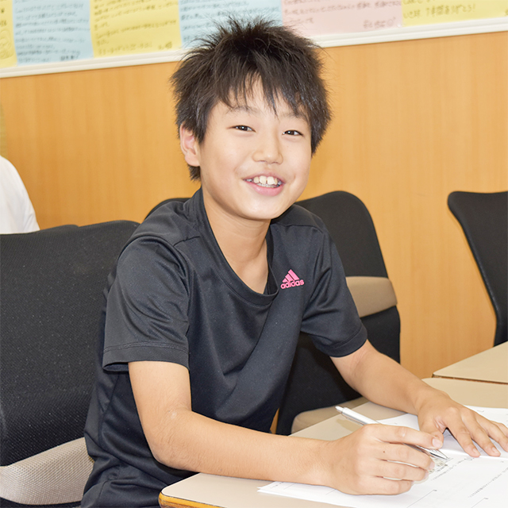
中学生は、志望校合格へ導く授業とシステム。小学生は、小学生のうちからハイレベルな高校入試に対応できる応用力が身につく授業です。
この5つの力が、
次の数字になっています。
143
1年で伸びた最大の点数
（中台中・5教科合計）
494
公津の杜中で学年1位
（5教科合計）
3,000
Canを卒業していった
子どもたち
25,000
入試の過去問・授業の
解説動画（中3・見放題）
※個別教育Can公式サイト掲載の実績より。成績の伸びには個人差があります。
※公式サイト掲載の2025年春 全合格進学先一覧より抜粋。
小学生
教え方もわかりやすくて、解いているときにたくさん褒めてもらえて、嬉しいです。

中学生
Canに行くといつでも先生に会えるし、学校の話とか、部活の話も聞いてもらえて、頑張ろうってなります！授業もわかりやすくて、楽しくて、たくさん褒めてもらえます！

小学生の保護者さま
本当に勉強が大好きになっていると思います。Canの先生のことが大好きで、そのおかげで勉強も好きになっています。こんなに勉強に前向きになるなんて思っていなかったです！

中学生の保護者さま
Canに通い始めてから、なんでも前向きに頑張れるようになりました！Canに自習に行く！毎日行く！と言っていますし、とても努力してくれています。

小学生
Canは、自習するスペースが沢山あるから通いやすいし、明るくて楽しい！先生たちも子ども想いで優しい先生ばっかり！学校の勉強もわかるようになって、勉強が好きになった！
中学生
先生方が親身にお話を聞いてくださっていいと思いました。私が数学について悩んでいる時に、先生が粘り強く励ましてくれたおかげで諦めず問題と向き合えるようになりました。
小学生の保護者さま
先生にご指導頂いてから、確実に苦手意識がなくなってきたように思います。「先生に教われば大丈夫！」と信頼していて、娘のことをわかって頂けているみたいで本当に有難うございます。
中学生の保護者さま
真摯に他者と向き合い子供の成長を全力で後押しして下さる先生方には、私自身、とても感銘を受けました。人間的にも成長が見られ、人生の明るい面に恵まれた事に感謝しかありません。
小学生
学校よりもわかりやすくて、たのしいです！
中学生
親身になって先生方が教えてくれます！塾なのに勉強以外のことも教えてくれたり話してくれたりして楽しいし、わかりやすいって感じです！
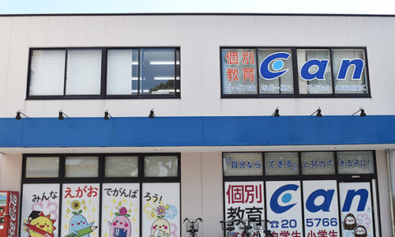
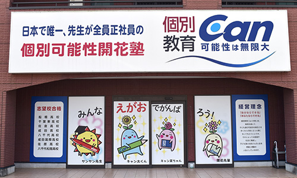
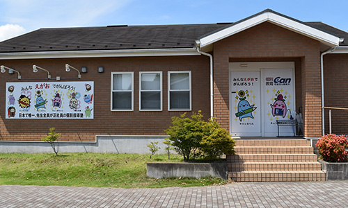

小学校：吾妻小・公津の杜小・成田小・美郷台小・平成小・新山小・加良部小・中台小・向台小・公津小・橋賀台小・平賀小・久住小・富里小・七栄小・富里南小・根木名小・三里塚小・本城小・芝山小・山武北小・多古第一小・酒々井小・大室台小・玉造小・神宮寺小・本埜小・下総みどり学園
中学校：公津の杜中・成田中・成田西中・吾妻中・中台中・久住中・富里中・富里南中・富里北中・酒々井中・芝山中・印旛中・玉造中・遠山中・多古中・佐倉中・八街北中
通わせる前に、はっきりお伝えします。
| 小1〜小5 | 1教科ごとの月謝 5,900円（税込6,490円） |
|---|---|
| 小6 | 1教科ごとの月謝 6,000円（税込6,600円） |
| 2教科 | 3教科 | 4教科 | 5教科 | |
|---|---|---|---|---|
| 中1 | 24,000円（税込26,400円） | 28,000円（税込30,800円） | 32,000円（税込35,200円） | 36,000円（税込39,600円） |
| 中2 | 25,000円（税込27,500円） | 29,000円（税込31,900円） | 33,000円（税込36,300円） | 37,000円（税込40,700円） |
| 中3 | — | 34,000円（税込37,400円） | 36,000円（税込39,600円） | 38,000円（税込41,800円） |
体験を受けてから、
じっくりお決めいただけます。
小学1年生から中学3年生まで通っていただけます。
小学生は1教科から選べます。中学生は中1・中2が2教科から、中3は3教科からです。教科は算数（数学）・英語・国語・理科・社会の中から選べます。
何の教科を何曜日の何時から行うかは、ほぼご要望どおりに組めます。16時からの時間帯を選ぶと1教科につき500円お安くなります。
兄弟姉妹2人が通っている場合、1家族につき毎月2,200円（税込）の割引があります。
各教室に自習席が50席以上あり、毎日ご利用いただけます。「Canに自習に行く！」と自分から通う子も多くいます。
先生は全員正社員のため、学生アルバイトのように担当が頻繁に変わることはありません。卒業まで変わらない関係の中でお子様に寄り添います。
無料です。どの校舎でも無料体験授業を受けていただけます。体験後にしつこくお誘いすることはありませんので、安心してお越しください。
桜は桜、薔薇は薔薇として
美しく咲くように。
お子様が持つ唯一無二の可能性を、
そのまま満開にしたい。
私たちは、心からそう願っています。
まずは、無料体験授業で
教室の空気に触れてみてください。
お電話でも受け付けています（24時間受付）
050-1720-0512